Location: Samples/04 Mixers/01 Linear Mixers
Recommended After: Live Inspector
Learning Outcomes: in this sample you will learn:
How to blend between animations to move a character at any speed.
How to use Blend Trees, Controller States, Mixers, Transition Assets, and Parameters.
Pro-Only Features are used in this sample: Controller States and Mixer States. Animancer Lite allows you to try try out these features in the Unity Editor, but they're not available in runtime builds unless you purchase Animancer Pro.
Summary
Remember how the Live Inspector sample showed that it's possible to manually play multiple animations at the same time to blend between them? Well, this sample demonstrates how to do that properly in code.
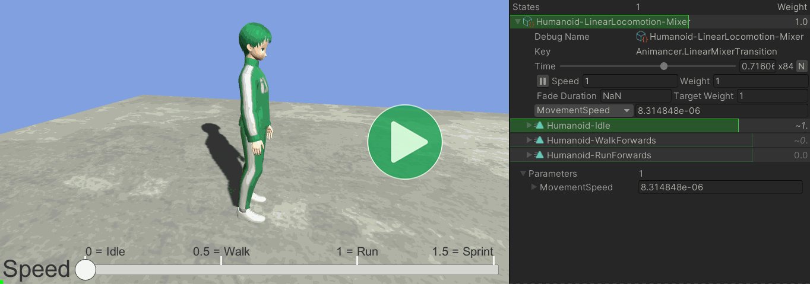
The character smoothly blends betweem Idle, Walk, and Run animations based on a MovementSpeed parameter linked to a UI Slider.
Overview
The code structure looks a bit unusual because this sample is comparing two different ways of doing the same thing. The PlayTransitionAssetOnEnable can be given any Transition Asset to play without modifying the code, so by default it's using one containing a Mixer but you can also swap it over to the other one which achieves a similar result using a Blend Tree.
{kind=link}
PlayTransitionAssetOnEnable is just as simple as PlayAnimationOnEnable from the Quick Play sample, but this time it's playing a Transition Asset:
using Animancer;
using UnityEngine;
public class PlayTransitionAssetOnEnable : MonoBehaviour
{
[SerializeField] private AnimancerComponent _Animancer;
[SerializeField] private TransitionAssetBase _Transition;
protected virtual void OnEnable()
{
_Animancer.Play(_Transition);
}
}
FloatParameterSlider binds an Animancer Parameter to a UI slider:
using Animancer;
using UnityEngine;
public class FloatParameterSlider : MonoBehaviour
{
[SerializeField] private Slider _Slider;
[SerializeField] private AnimancerComponent _Animancer;
[SerializeField] private StringAsset _ParameterName;
private Parameter<float> _Parameter;
protected virtual void Awake()
{
_Parameter = _Animancer.Parameters.GetOrCreate<float>(_ParameterName);
_Slider.onValueChanged.AddListener(_Parameter.SetValue);
_Parameter.OnValueChanged += value => _Slider.value = value;
}
}
Blend Tree
Without Animancer, Unity's default way of blending between animations like Idle, Walk, and Run is to use a 1D Blend Tree inside an Animator Controller.
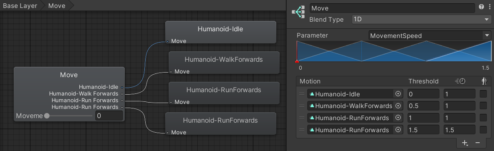
That Blend Tree is linked to an Animator Controller Parameter called MovementSpeed which could be controlled like this:
[SerializeField]
private Animator _Animator;
[SerializeField, Range(0, 1.5f)]
private float _MovementSpeed;
protected virtual void Update()
{
_Animator.SetFloat("MovementSpeed", _MovementSpeed);
}
In Animancer, you could play that same Animator Controller using a Controller Transition like this:
[SerializeField] private AnimancerComponent _Animancer;
[SerializeField] private ControllerTransition _Controller;
[SerializeField, Range(0, 1)]
private float _MovementSpeed;
protected virtual void OnEnable()
{
_Animancer.Play(_Controller);
}
protected virtual void Update()
{
// Transitions don't have parameters to control directly.
// But once it has been played to create the state,
// you can access the state's parameters.
_Controller.State.SetFloat("MovementSpeed", _MovementSpeed);
}
That would allow you to use the Blend Tree for the character's movement animations while still making use of Animancer to play any other animations outside the Animator Controller.
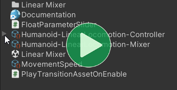Sub-Assets
Since the Animator Controller isn't used anywhere other than the Transition Asset in this sample, the Drag and Drop Sub-Assets feature of Inspector Gadgets Pro was used to turn the controller into a sub-asset of the transition in order to organise them a bit better.
Mixer
Blend Trees are a bit restrictive, so Animancer has Mixer States which achieve the same goal with more flexibility.
A 1D Blend Tree is equivalent to a Linear Mixer.
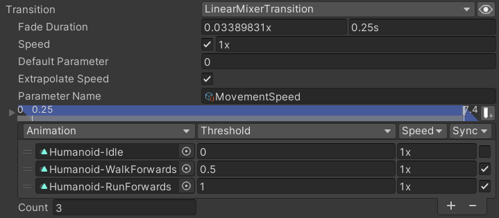
Playing a Mixer Transition is similar to playing a Controller Transition:
[SerializeField] private AnimancerComponent _Animancer;
[SerializeField] private LinearMixerTransition _Mixer;
[SerializeField, Range(0, 1.5f)]
private float _MovementSpeed;
protected virtual void OnEnable()
{
_Animancer.Play(_Mixer);
}
protected virtual void Update()
{
// Transitions don't have parameters to control directly.
// But once it has been played to create the state,
// you can access the state's parameters.
_Mixer.State.Parameter = _MovementSpeed;
}
The main difference in this code is the way the parameter is controlled. A LinearMixerTransition knows that the State it creates will only have one float value for its Parameter so we can simply set it directly instead of needing to call SetFloat with a parameter name like we did for the Blend Tree.
Another major difference is the way they synchronize their animations which will be explained later.
Decoupling
The above examples are nice and self-contained, which is great for simple situations where it's reasonable for one script to be responsible for defining a transition, playing it, and also controlling its parameter. But in more complex situations it can be really inconvenient to get your script a strongly typed reference to a specific state just to control its parameter.
One such case is in this sample. The Blend Tree and Mixer outlined above are defined in Transition Assets for two reasons:
- We want to play either one of them using the same script instead of needing two nearly identical scripts.
- We want to reuse the Mixer in later samples without needing to set up the exact same thing again.
Transition Assets can be created using the Assets/Create/Animancer/Transition Asset menu function then referenced and played just like anything else:
public class PlayTransitionAssetOnEnable : MonoBehaviour
{
[SerializeField] private AnimancerComponent _Animancer;
[SerializeField] private TransitionAssetBase _Transition;
protected virtual void OnEnable()
{
_Animancer.Play(_Transition);
}
}
Note how that script has no idea what type of transition is actually contained in the Transition Asset, which means anything could be assigned in the Inspector. It's only responsible for playing something and it doesn't need to care whether that thing has multiple animations or parameters or know any of its other details.
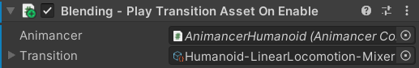
Animancer Parameters
The above Decoupling raises a new question: if the script doesn't know what it's playing, how are we supposed to control the blending parameter?
And the answer is Animancer's Parameters system. It works much like Unity's Animator Controller Parameters where a bunch of parameters are held in a central location for other systems to get and set their values as necessary.
For this sample, we have a parameter called MovementSpeed which is defined as a String Asset. Note that the asset is just a name which could be used for anything, it doesn't know if it's being used as a parameter or what type of parameter so we use its Editor Comment field to explain its purpose.
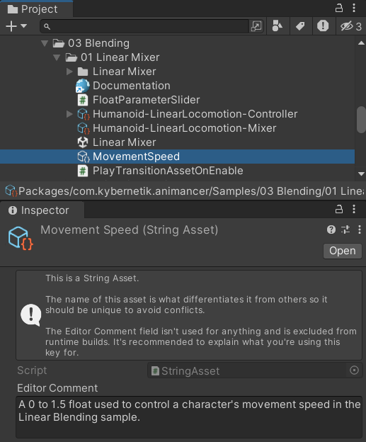
The Mixer Transition has that asset assigned as its Parameter Name:
The Controller Transition also has a Parameter Bindings field where we could assign the asset, but since the name of the Animator Controller Parameter is exactly the same as the Animancer Parameter we want to bind it to, we can simply have the Bind All Parameters toggle enabled:
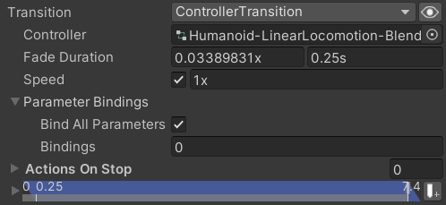
Now that those bindings are set up, playing either of the Transition Assets will automatically bind its own parameter to the corresponding Animancer Parameter, meaning that you can see and control it in the Live Inspector:
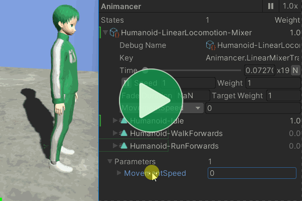
- Animancer Parameters are created on demand. The first time something tries to get or set a particular value, a parameter is created for it with that name and type.
- Also note how that video shows the Mixer's details a few lines above the area being dragged with another field labelled
MovementSpeedthe same as the parameter name.- That indicates the binding between the Mixer's parameter and the Animancer Parameter at the bottom.
- This is a one way binding. Changing the Mixer's parameter directly will not feed back to the Animancer Parameter.
Float Parameter Slider
This sample uses the FloatParameterSlider script to demonstrate how to properly control a UI Slider in the scene.
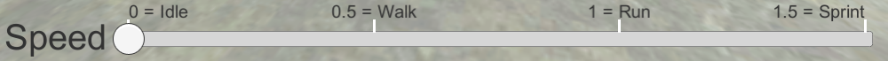
This script doesn't need to know what animations are playing and doesn't even care whether the parameter value is being used by anything. It's simply responsible for connecting the UI Slider to the specified parameter in the AnimancerComponent.
using Animancer;
using UnityEngine;
public class FloatParameterSlider : MonoBehaviour
{
[SerializeField] private Slider _Slider;
[SerializeField] private AnimancerComponent _Animancer;
[SerializeField] private StringAsset _ParameterName;
The first step is to make a field to store the parameter in and GetOrCreate it on startup. In this case we're using a float parameter because that's what the Blend Tree and Mixer need, but any type could potentially be used as a parameter.
private Parameter<float> _Parameter;
protected virtual void Awake()
{
_Parameter = _Animancer.Parameters.GetOrCreate<float>(_ParameterName);
To bind the parameter value so that it follows the Slider, we simply add _Parameter.SetValue as a listener to the _Slider.onValueChanged event.
_Slider.onValueChanged.AddListener(_Parameter.SetValue);
It won't be useful here, but we can also turn it into a two way binding by adding a Lambda Expression as a listener to the _Parameter.OnValueChanged event. This is what the Parameter Bindings on each of the states do internally.
_Parameter.OnValueChanged += value => _Slider.value = value;
}
}
And that's everything we need to get this sample going:
That's just the Mixer playing, so if you want to see the Blend Tree you can either assign it to the PlayTransitionAssetOnEnable component before entering Play Mode or drag it into the Live Inspector in Play Mode and use Ctrl + Click to swap between them as demonstrated in the Live Inspector sample.
But wait, there's more! Let's take a closer look at the blending characteristics of the different segments of the slider.
Time Synchronization
First let's look at the middle segment where it's blending between Walk and Run.
Those two animations have different lengths because each Run cycle is faster than a Walk cycle. That means if we were to simply let both animations play at their normal speed, the resulting motion would look really bad because their corresponding poses don't line up.
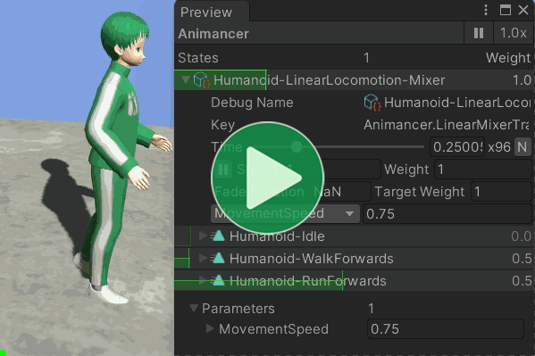
This can be solved by first ensuring that each of the animations start in the same pose. These sample animations are all set to start just as the character's left foot touches the ground.
| Walk | Run |
|---|---|
| 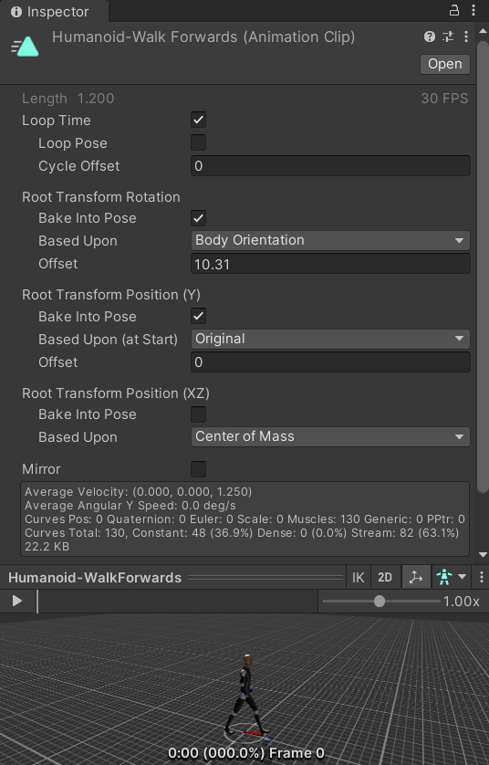 | 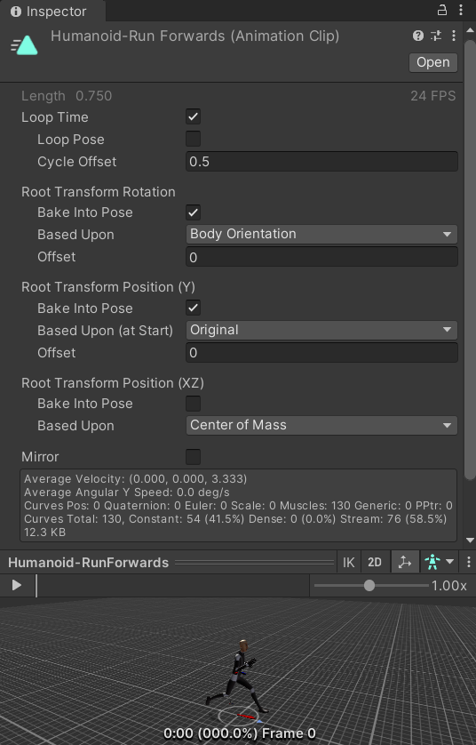 |
Note how the Run animation's Cycle Offset is set to 0.5. That's because the animation data actually starts with the right foot coming down so offsetting its cycle by 50% makes it start in the pose we need.
With the animation poses lined up properly, all you need to do is enable Time Synchronization using the Sync toggles on the right side of the Mixer Transition (which are enabled by default).
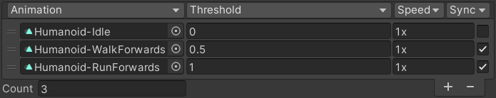
Now when the Mixer is blending between those animations, it will adjust their individual speeds in proportion to their weights to keep their normalized times synchronized.
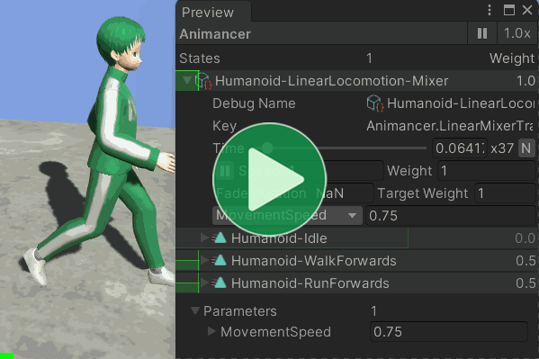
Optional Synchronization
You may have noticed that the Sync toggle is disabled for the Idle animation in the above image. That's because synchronization can produce worse results in cases where the animation times don't have any relevance to each other such as when blending between Idle and Walk.
Here's what the Walk animation looks like on its own (when the parameter is at 0.5):
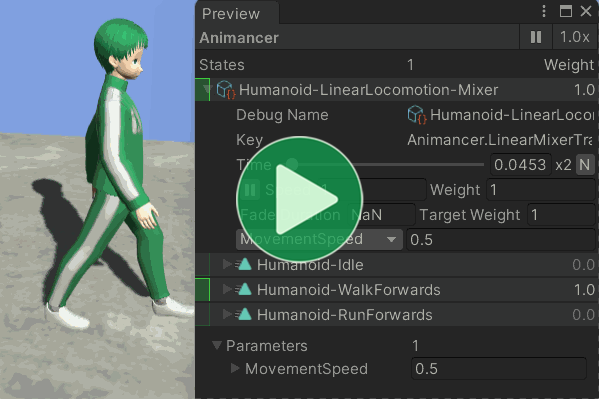
And here's what it should look like halfway between Walk and Idle (when the parameter is at 0.25):
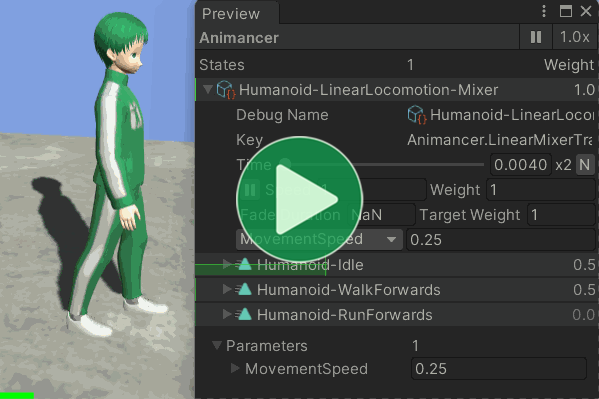
That's good, it makes sense for the motion halfway between moving and standing still to be moving at about half the speed.
But if you leave Time Synchronization enabled on the Idle animation as well, you instead get a slower movement than expected because it's playing the Walk slower in addition to its reduced Weight:
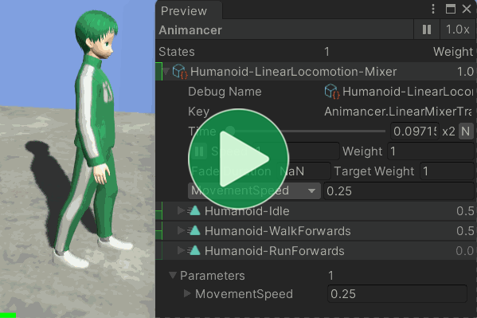
This issue gets worse when there is a large difference between the animation lengths (as is the case with these sample animations).
And then there's the Blend Tree:
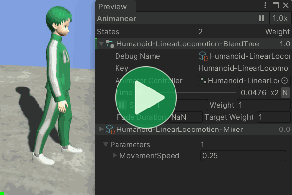
Somehow it's even worse. Why? No idea because their source code isn't publicly available and you can't do anything about it because Blend Trees don't give you any control over their synchronization system.
Extrapolate Speed
That brings us to the blending between Run and Sprint.
You may have noticed by now that these samples don't actually have a Sprint animation so to move faster than the Run animation we can simply increase its speed.
In the Blend Tree, this is achieved by having the Run animation in the Motion list twice with the second one having 1.5 as its Threshold and Speed.
That works perfectly fine and you could do the same in a Mixer, but it's even easier to simply enable the Extrapolate Speed toggle which calculates how to do it automatically.
Using Extrapolate Speed is also slightly more efficient because it avoids the need to have an extra copy of the Run state to process.
What Next?
| Sample | Topic |
|---|---|
| Directional Mixers | Using a 2D Directional Mixer to implement strafing and backwards movement with blending for any diagonal between them. |
| Animator Controllers | More samples about using Animator Controllers in Animancer. |